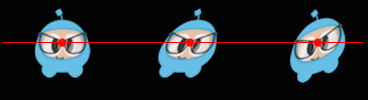

精灵的控制
在创建完精灵后，现在你能试着修改精灵的属性去控制它了。
创建精灵：
auto mySprite = Sprite::create("mysprite.png");

锚点
锚点确定了精灵对象在计算坐标位置的一个基准点，这个点是精灵内部的点，锚点影响精灵的缩放，旋转，倾斜这种转换，不影响颜色，透明度这种属性。锚点使用的坐标系以左下角为原点 (0, 0)，在你设置锚点的值时，要注意到这一点。默认情况下，所有的节点对象锚点是 (0.5, 0.5)。
设置锚点：
// DEFAULT anchor point for all Sprites
mySprite->setAnchorPoint(0.5, 0.5);
// bottom left
mySprite->setAnchorPoint(0, 0);
// top left
mySprite->setAnchorPoint(0, 1);
// bottom right
mySprite->setAnchorPoint(1, 0);
// top right
mySprite->setAnchorPoint(1, 1);
观察下面的图，感受锚点对精灵位置的影响，红点是旁边精灵的锚点。

位置
精灵的位置受锚点影响，看一下这个具体是怎样的，以红线红点为环境参考，看精灵的不同位置。注意，我们设置了锚点值，精灵的位置变化了，我们并没有使用 setPosition() 方法设置精灵的位置。

当我们想设置一个精灵的位置时，主要是使用 setPosition() 方法，只有想改变精灵与基准坐标点的相对位置时，才考虑使用 setAnchorPoint() 设置锚点。
// position a sprite to a specific position of x = 100, y = 200.
mySprite->setPosition(Vec2(100, 200));
旋转
通过 setRotation() 方法，设置一个角度值可以控制精灵的旋转，正值精灵顺时针旋转，负值精灵逆时针旋转，默认位置的角度值是 0.0。
// rotate sprite by +20 degrees
mySprite->setRotation(20.0f);
// rotate sprite by -20 degrees
mySprite->setRotation(-20.0f);
// rotate sprite by +60 degrees
mySprite->setRotation(60.0f);
// rotate sprite by -60 degrees
mySprite->setRotation(-60.0f);

缩放
通过 setScale() 方法控制精灵的缩放。可以控制精灵水平缩放，垂直缩放，也可以整体缩放。默认水平和竖直的缩放值都是 1.0。
// increases X and Y size by 2.0 uniformly
mySprite->setScale(2.0);
// increases just X scale by 2.0
mySprite->setScaleX(2.0);
// increases just Y scale by 2.0
mySprite->setScaleY(2.0);

倾斜
通过 setSkewX() 控制精灵的倾斜度，可以控制精灵水平倾斜，竖直倾斜，或者水平竖直同时倾斜，默认水平和竖直的倾斜值都是 0.0。
// adjusts the X skew by 20.0
mySprite->setSkewX(20.0f);
// adjusts the Y skew by 20.0
mySprite->setSkewY(20.0f);

颜色
通过 setColor() 控制精灵的颜色。将一个 RGB 值设置到 Color3B 对象，调用精灵的 setColor() ，就能完成精灵颜色的设置。RGB 是三个从 0-255 的值，三个值分别代表红绿蓝的颜色深度，数值越大，颜色越深。特别的 RGB(255, 255, 255) 是白色。如果你不想自己指定 RGB 的三个值，也可以使用 Cocos2d-x 提供的预定义颜色，比如: Color3B::White，Color3B::Red。
// set the color by passing in a pre-defined Color3B object.
mySprite->setColor(Color3B::WHITE);
// Set the color by passing in a Color3B object.
mySprite->setColor(Color3B(255, 255, 255)); // Same as Color3B::WHITE

透明度
精灵的透明度可以通过 setOpacity() 传入一个特定的值来设置，这个值的范围是 0-255，数值越大透明度越低，255 代表完全不透明，0 代表完全透明。
// Set the opacity to 30, which makes this sprite 11.7% opaque.
// (30 divided by 256 equals 0.1171875...)
mySprite->setOpacity(30);